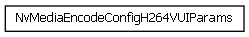
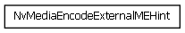
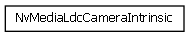
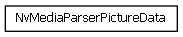
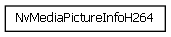
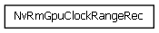
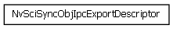
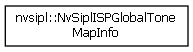
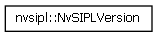

NVIDIA DRIVE OS Linux SDK API Reference
6.0.5 Release
Class Hierarchy
Go to the textual class hierarchy









Subject to Change | For test and development only.
2022 NVIDIA CORPORATION & AFFILIATES. All rights reserved.
Tue Nov 29 2022 20:35:38 | PR-10720-6.0